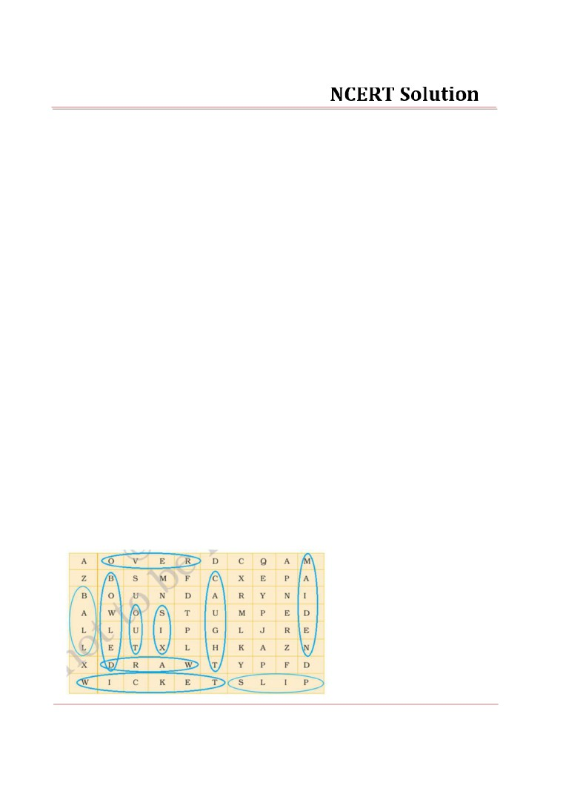
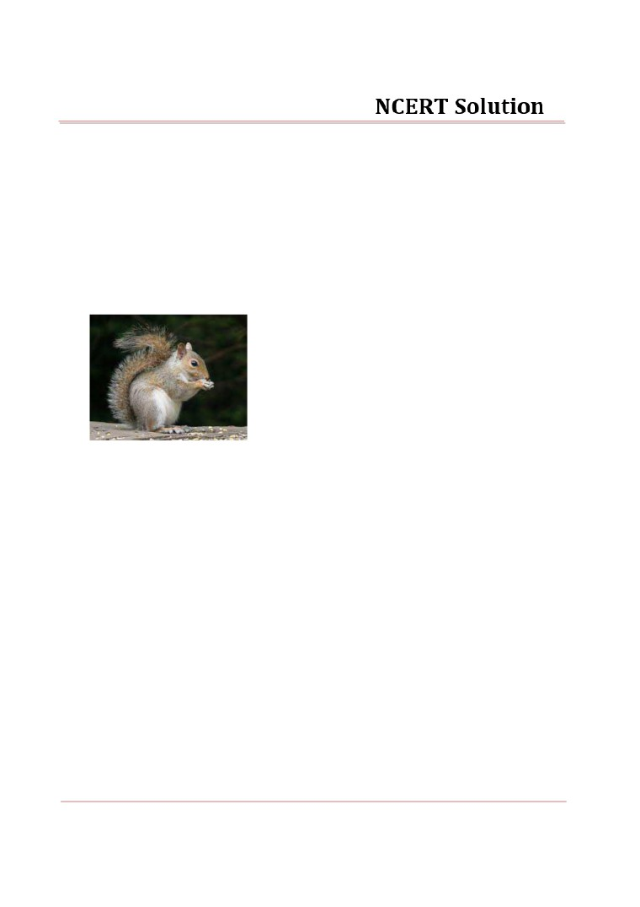
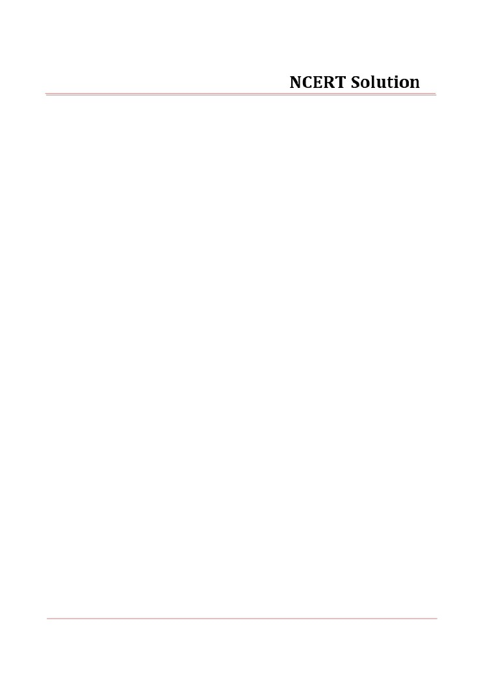
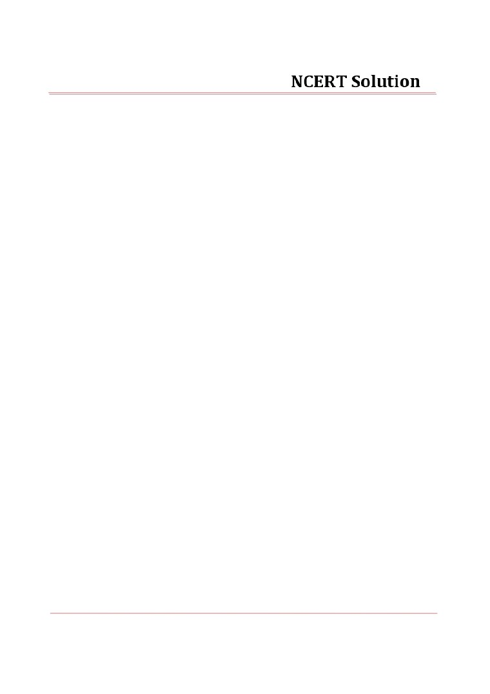

NCERT Solutions
Chapter-01
The Three Question
Page No: 10
Comprehension Check
Ansi.: The king wanted to know answers to three questions because of the thought came to his mind
that he would never fail if he knew answers to these three questions.
Ans2:
(iv) to announce a reward for those who could answer the questions.
Page No: 14
Comprehension Check
Ans:
1. Many wise men answered the king's questions, but their answers were so varied that the king was
not satisfied.
2. Someone suggested that there should be a council of wise men to help the king act at the right time.
3. Someone else suggested that the king should have a timetable and follow it strictly.
4. The king requested the hermit to answer three questions.
5. The king washed and dressed the bearded man's wound, but the bleeding would not stop.
Working with the text
Ansi.: In answer to the first question, in order to decide the right time for doing something urgent one
must have to look into the future. Since only magician could do that, the king was advised to go
to magicians.
Ans2: In answers to the second question, some said that the people most necessary to the king were
his councilors, others said, the priests. A few others chose the doctors. And yet others said that
soldiers were the most necessary.
Ans3: In answer to the third question, some said science will be most important. Others suggested
fighting, and some said religious worship.
Ans4: No, the wise men did not win the reward. The king got different for all the three questions he
asked. He was not satisfied with any of them.
Page No: 15
Ans5: The king and the hermit helped the wounded man by providing him the shelter and protected
from the army. The king washed and covered the wound of the man with his handkerchief, but
the blood would not stop flowing. The king re-dressed the wound until it stopped bleeding. They
took him to but for taking rest and king also gave him fresh water after being relaxed.
Ans6:
(i) Bearded man was the enemy of the king who swore to revenge him for seizing of his property
and putting his brother to death.
NCERT Solutions
(ii) He asked for the king's forgiveness as the king had saved his life. He came there for taking
revenge from the king but instead the king helped him to get better.
Ans7: The king showed his forgiveness by sending his servants and his own doctor to look after him,
and he promised to give back the wounded man his property.
Ans8: In answer to king's first question, the hermit said that there is only one important time 'Now'. It
is the only time when you have power to act.
In answer to king's second question, the hermit said that the most important person is the one
with whom we are at the present.
In response to king's second question, the hermit answered that the most important thing to do
is to do that person good.
I like the answer of the first question the most because time has the supreme power. It can take
you to height if you do something good and can also make you fall on ground if you won't act in
presence. One should live and act according to present.
Working with language
(i) wounded: severely injured
(ii) awoke: got up from sleep
(iii) forgive: pardon
(iv) faithful: loyal
(v) pity: feel sorry for
(vi) beds: small patches of ground for plants
(vii) return: give back
I will ask my parents to forgive for my bad behaviour.
Dog is faithful animal of man.
I am feeling pity for my shameful act.
Ans2:
(i) The judge said that only fresh evidence would make him change his judgement.
(ii)
I didn't notice any serious difference of opinion among the debaters, although
they differed from one another over small points.
(iii) It's a fairly simple question to answer, but will you accept my answer as final?
(iv) It isn't necessary that necessity should always be the mother of invention.
(v) Hermits are wise men. How they acquire their wisdom no one can tell.
(vi) The committee has decided to make Jagdish captain of the team. The decision is likely to
please everyone.
(vii) Asking for forgiveness is as noble as willingness to forgive.
NCERT Solutions
Chapter-02
A Gift of Chappals
Page No: 22
Comprehension Check
Ansi: Meena shared the secret of having a kitten in the backyard inside a torn football lined with
sacking and filled with sand. They found him outside the gate in the morning.
Ans2: For getting milk for the kitten, Ravi told Paati that he is hungry when she saw him with glass of
milk. Paati got suspicious so Ravi had to drink most of the milk and told Paati that he will wash
the tumbler by himself. After that, Ravi ran and pour the milk into coconut shell and then ran
back to wash the tumbler before Paati got really suspicious.
Ans3: He said the kitten's ancestors was the Mahabalipuram Rishi-Cat, which was the emblem of the
Pallava dynasty and the Mahabalipuram Rishi-Cat was descendants of the cat-goddess of Egypt.
No, I don't believe him.
Ans4: I agree to these statements.
(ii) his knowledge of history is sound.
(iii) he has a rich imagination.
Ans5: The sound of kreeching startled Mridu and frightened Mahendran. It was the sound of Violin that
Lalli was learning to play.
Page No: 28
Comprehension Check
nsl: "The music-master's notes seemed to float up and settle perfectly into the invisible tracks of the
melody. It was like the wheels of a train fitting smoothly into the rails and whizzing along"
This sentence in the text that expresses the idea that the music master is making lovely music.
Ans2: No, the beggar had not come to Rukku Manni's house for the first time because Paati said to Tapi
that he had been coming in their house every day for the past week, and it's time to found him
another house to beg from!
Ans3: V-shaped eyebrow is formed only when people are in anger. This suggest that Rukku Manni was
very angry in mood when she came to know about the missing chappals of the music teacher.
Page No: 29
Working with the Text
Ansi.:
(i) Ravi compares Lalli's playing the violin to derailing of the train going completely off track.
(ii) Trying to hide beneath the tray of chillies, Mahendran tipped a few chillies over himself.
(iii) The teacher played a few notes on his violin, and Lalli stumbled behind him on her violin,
which looked quite helpless and unhappy in her hands.
(iv) The beggar said that the kind ladies of the household kept his body and soul together on their
generosity for a whole week. He couldn't believe that they would turn him away.
(v) After the lesson was over, the music teacher asked Lalli if she had seen his chappals.
Ans2: As seen from the window, music teacher had the bony figure. He had a mostly bald head with a
fringe of oiled black hair falling around his ears and an old-fashioned tuft. A gold chain gleamed
NCERT Solutions
around his leathery neck, and a diamond ring glittered on his hand as it glided up and down the
stem of the violin. A large foot stuck out from beneath his gold-bordered veshti edge, and he was
beating time on the floor with the scrawny big toe.
Ans3:
(i) Mridu conclude that the beggar had no money to buy chappals because his feet were blistered.
(ii) She suggested Mridu and Ravi about the pair of old slippers so that they could give it to the
beggar.
Ans4:
(i) Rukku Manni actually wanted to ask the children if they had seen the music master's slippers.
(ii) She changed her question because children were curiously quiet and she suspected that
children must have done something with chappals.
(iii) She thought that the children have given the music-master's chappals to that old beggar.
Ans5: The music teacher tried not to look happy because he did not wanted to reveal his happiness of
getting new chappals of Gopu Mama to others. He wanted to show that his own chappals were
more expensive and branded one. Actually, he was very happy after getting Gopu Mama's
chappals.
Ans6: On getting a gift of chappals, the beggar vanished in a minute because he did not wanted to lose
the gift of those chappals. His feet were blistered and he couldn't have got anything better from
that house.
Page No: 30
Ans7: Gopu Mama always in such a hurry to throw off his shoes and socks and get into his chappals as
soon as he comes home. Rukku Manni began to laugh while thinking about the reaction of her
husband after hearing this incident and when he came to know about that they had given his
new chappals to the music teacher.
Working with Language
Ansi:
(i) If you tire yourself now, you won't be able to work in the evening.
(ii) If you study regularly, you'll do well in the examination.
(iii) If you work hard, you'll pass the examination in the first division.
(iv) If you are polite to people, they'll also be polite to you.
(v) If you tease the dog, it'll bite you.
Ans2: Today is Sunday. I'm wondering whether I should stay at home or go out. If I go out, I will miss the
lovely Sunday lunch at home. If I stay for lunch, I will miss the Sunday film showing at Archana
Theatre. I think I'll go out and see the film, only to avoid getting too fat.
Ans3:
(i) Don't go to the theatre if you don't want to.
(ii) He'll post your letter if you want him to.
(iii) Please use my pen if you want to.
(iv) He'll lend you his umbrella if you want him to.
(v) My neighbour, Ramesh, will take you to the doctor if you want him to.
(vi) Don't eat it if you don't want to.
NCERT Solutions
Chapter-03
Gopal and The Hilsa Fish
Page No: 42
Working with the Text
Answer the following questions.
Ansl: The king was fed of the talks of Hilsa-fish. It was season of Hilsa-fish and everyone was busy
in talking of it. More-ever, he did not want his courtier to waste the time on these talks.
Ans2: The king asked Gopal to buy a hilsa-fish and bring it to the palace without anyone asking
anything about the fish throughout the way to prove that he was clever.
Ans3: Gopal half-shaved his beard, smeared himself with ash, and wore disgraceful rags before he
went to buy his hilsa-fish.
Ans4: When Gopal asked the guards to let him meet the king, they refused. Therfore, he began to
dance and sing loudly. On hearing his loud song, the king sent his messenger to call him in
the court.
Ans5: Gopal funny appearance attracted the attention of people much more than the hilsa-fish. At
that time, no one was caring about the hilsa-fish he was carrying. Everyone was busy in
talking about his mad appearance, half shaved face and rags.
Ans6:
(i) True
(ii) False
(iii) True
(iv) False
(v) False
Working with Language
Ansi.:
(ii) Why is your face half-shaven?
Gopal's wife asked him why was his face half-shaven.
(iii) I accept the challenge, Your Majesty.
Gopal told the king that he accepted his challenge.
(iv) I want to see the king.
Gopal told the guards that he wanted to see the king.
(v) Bring the man to me at once.
The king ordered the guard to bring the man to him at once.
Page No: 43
Ans2:
(i) challenge - ask to contest, dare
The boss challenged Rahul to finish his work before the time.
(ii) mystic - believing in spiritual power
NCERT Solutions
Some people do believe in the mystic forces.
(iii) comical - funny
I liked the comical act of the joker the most.
(iv) courtier - officials of the king's court
Birbal was one of the clever courtier present in Akbar's court.
(v) smearing - to apply coat or mark
He smeares his face with ashes.
Page No: 46
Ans2:
(i) Stag is by the side of the pond.
(ii) He is looking at the reflection of his horns and legs in the water.
(iii) Yes, he liked his antlers.
(iv) No, he did't liked his legs.
(v) The stag is running to save his life from the hunters.
(vi) No, he is not able to hide himself in the bushes.
(vii) The hunters are now beside to him.
(viii) Yes, they closing in on the stag.
(ix) Yes, the stag is free.
(x) The stag said that he was proud of his horns which could have caused his death and was
ashamed of his legs which saved him.
Ans3: The suitable title for this story will be All that glitters is not gold".
A stag was once drinking water at a pond. He saw his own reflection in water. He admired
his beautiful horns, but he did not like his thin and ugly legs. Suddenly he saw a group of
hunters running towards him. He ran into the jungle to save himself. His legs soon carried
him far from the hunters. He then tried to hide himself in the bushes but his horns were
caught into the bush. With his best efforts, he was able to free himself. Now he realised that
his ugly legs helped him in saving his life, but his beautiful horns could have caused his
death.
Page No: 47
Ans4:
IR o JS
4
O
IF Is
U
Si
7
S
FRIE]
NCERT Solutions
Chapter-04
The Ashes that Made Trees Bloom
Page No: 60
Comprehension Check
Ansi: The neighbors when heard about the good luck brought by the dog to the couple coaxed the
dog into their garden in hope that he would find treasure for them. They dragged him out
of doors and the dog scratched and pawed the ground under a pine tree. When on digging
the ground, they saw that there was nothing but a dead kitten, they became furious at the
dog. They beat him to death and then flung him into the hole.
Ans2:
(i) - (b) The old farmer and his wife loved the dog as if it was their own baby.
(ii)
- (c) When the old couple became rich, they lived comfortably and were generous
towards their poor neighbors.
(iii) - (c) The greedy couple borrowed the mill and the mortar to make a pile of gold.
Page No: 63
Working with the Text
Answer the following questions.
Ansl: The old farmer was a kind person. He and his wife had a pet dog named Muko, as his baby.
Having no children, they loved it as though it were a baby. They fed him fish from their own
chopsticks and all the boiled rice he wanted. He was patient and kind to everything that
had life and often turned up a sod on purpose to give food to the birds.
Ans2: The dog came running to the farmer and kept on whining and running to and fro till the
farmer followed him. The dog began a lively scratching. Thinking it was possibly a buried
bone or fish, the farmer struck his home in the earth and found the hidden gold.
Ans3:
(i) The spirit of the dog asked the farmer in his dream to cut down the pine tree over his
grave and make a mortar for rice pastry and a mill for bean sauce.
(ii) The spirit of the dog informed the farmer in his dream that his wicked neighbours had
burnt the hand-mill. He advised him to take the ashes of the mill and sprinkle them on
the withered trees and they would bloom again.
Page No: 64
Ans4: The farmer had the magical ashes. He made the old withered cherry tree blossom once
again by sprinkling the ashes. So, the daimio rewarded the farmer for this. When his greedy
neighbor heard about it, he took the ashes and when daimio was passing on the highway,
he threw a handful of ashes over the tree. The tree did not blossom and wind blew the fine
dust in the noses and eyes of the daimio and his wife. That is why his neighbor punished
for the same act.
Working with language
Ansl:
(i) Where is Anil?
(ii) Where is Anil sitting?
NCERT Solutions
(iii) What is he doing?
(iv) Where is Anil's friend sitting?
(v) Who is writing on the blackboard?
(vi) What are some children doing?
Page No: 65
Ans2:
NEHA: When did you get this book?
SHEELA: Yesterday morning.
NEHA: Why is your sister crying?
SHEELA: Because she has lost her doll.
NEHA: Whose room is this, yours or hers?
SHEELA: It's ours.
NEHA: How do you go to school?
SHEELA: We walk to school. It is nearby.
Ans3:
(i) My friend lost his chemistry book. Now he doesn't know what to do and where to look
for it.
(ii) There are so many toys in the shops. Neena can't decide which one to buy.
(iii) You don't know the way to my school. Ask the policeman how to get there.
(iv) You should decide soon where to start building your house.
(v) Do you know how to ride a bicycle? I don't remember when and where I learnt it.
(vi) "You should know when to talk and when to keep your mouth shut," the teacher
advised Anil.
Page No: 66
Ans4:
(i) The project appears impossible at first sight but it can be completed if we work very hard.
(ii) He is incompetent. That's why he can't keep any job for more than a year.
(iii) "Don't be impatient. Your letter will come one day," the postman told me.
(iv) That's an improper remark to make under the circumstances.
(v) He appears to be insensitive. In fact, he is very emotional.
Ans5: There was once a play which became very successful. A famous actor was acting in it.
In the play his role was that of an aristocrat who had been imprisoned in a castle for
twenty years. In the last act of the play someone would come on the stage with a letter
which he would hand over to the prisoner. Even though the aristocrat was not expected to
read the letter at each performance, he always insisted that the letter be written out from
beginning to end.
Ans6:
A: Would you like an apple or a banana?
B: I'd like an apple, please.
A: Take the red one in the fruit bowl. You may take an orange also, if you like.
B: Which one?
A: The one beside the banana.
NCERT Solutions
Chapter-05
Quality
Page No: 78
Working with the Text
Answer the following questions.
Ansi: According to the author, Mr. Gessler was the best shoemaker in the city. He made only what
was ordered and what he made never failed to fit. The boot made by him yet
seems mysterious and wonderful. He was the perfect artist in this job.
Ans2: The boots made by Mr. Gessler lasted terribly lasts longer than the usual like having
something beyond temporary. Therefore, the author visits the shop so infrequently.
Ans3: When author's remark about a certain pair of boots, Mr. Gessler surprisingly looked at him
for a time to withdrew or qualify his statement. After that, he asked the author to get the
pair back and if he could do nothing of them then he would take them off his bill.
Ans4: Mr. Gessler's complaint against "big firms" that they didn't have self-respect. They got their
business by advertisement not by work. Every year, the sale of Mr. Gessler is getting less
because of them and soon he will have left with no job.
Ans5: The author got shocked and Filled with sorrow when he knew about the death of Mr.
Gessler's elder brother. In order to help him, he ordered so many pairs of boots. No, he didn't
really need them.
Working with Language
Ans(I):
(i) After a very long spell of heat, the weather is looking up at last.
(ii) We have no right to look down on people who do small jobs.
(iii) Nitin has always looked up to his uncle, who is a self-made man.
(iv) The police are looking into the matter thoroughly.
(v) If you want to go out, I will look after the children for you.
(vi) I promise to look in on your brother when I visit Lucknow next.
(vii) Look out when you are crossing the main road.
Page No: 79
Ans3:
Initial
Medial
Final
Sheep
fashion
trash
Shriek
portion
marsh
Shore
ashes
anxious
Sure
nation
fish
Shoe
pushing
polish
moustache
Page No: 80
NCERT Solutions
Ans4:
(i) Feature
(ii) Archery
(iii) Picture
(iv) Reaching
(v) Nature
(vi) Matches
(vii) Riches
(viii) Batch
(ix) Church
NCERT Solutions
Chapter-06
Expert Detectives
Page No: 89
Comprehension Check
Ansi: Nishad gave a bar of chocolate to Mr. Naphtha because he thought that Mr. Nath was poor
and starving.
Ans2: On every Sunday, Mr. Nath was with a tall, fair, stout man wearing spectacles in his room
who used to talk a lot unlike Mr. Nath.
Ans3: The monsoon broke and flooded the streets with a heavy downpour. Therefore, no traffic
could move through the flooded roads so Nishad and Maya got an unexpected holiday.
Page No: 93
Working with the Text
nsl: Nishad finds out from Ramesh that Mr. Nath took two meals in a day every morning and
evening. He was not particular about what he eats, it's always the same food
- two
chapattis, some dal and a vegetable. He drank two cups of tea, one in the morning and one
in the afternoon. He pays cash and tips well.
Page No: 94
Ans2: Maya thought that Mr. Nath was a crook because of his strange appearence and he did not
work. He never talked to anyone at Shankar House though he had been living there for
more than a year. He had scars on his face which according to Maya, must have been the
burn scars which would have got when police had set his house on fire. Moreover, he
didn't receive any letters and had only one visitor to visit him. She said that the Sunday
visitor must be his accomplice in crime and he came every now and then to give part of it
to his partner.
Ans3: No, Nishad didn't agree with Maya about Mr. Nath. He felt that he must be so lonely and
wanted to have friends. He said that he was not a criminal because he was so thin and
looked poor and starving.
He argued with Maya that he can't be a bad man if he gave Ramesh such generous tips.
Working with Language
Ansi:
(i) finger tips - the end of one's fingers
(ii) the tip of your nose - the pointed end of your nose
(iii) tip the water out of the bucket - empty a bucket tilting
(iv) have something on the tip of your tongue - be about to say something
(v) tip the bot over - make the boat overturn
(vi) tip him a rupee - give a rupee to him, to thank him
(vii) the tip of the bat - the end of the bat
(viii) the police were tipped of - the police were told, or warned
NCERT Solutions
(ix) if you take my tip - if you take this advice
(x) the bat tipped the ball - the bat lightly touched the ball
Ans2:
(i) business partner
(ii) my companion on the journey
(iii) I'm mother's little helper
(iv) a faithful companion such as a dog
(v) the thief's accomplice
(vi) find a good helper
(vii) tennis/golf/bridge partner
(viii) his accomplice in his criminal activities
Ans3:
(i) The storm broke- it began or burst into activity
(ii) daybreak- the beginning of daylight
(iii) His voice is beginning to break- changing as he grows up
(iv) Her voice broke and she cried- could not speak; was too sad to speak
(v) The heat wave broke- this kind of weather ended
(vi) broke the bad news- gently told someone the bad news
(vii) break a strike- end it by making the workers submit
NCERT Solutions
Chapter-07
The Invention of Vita Wonk
Page No. 101
Ans1:
(i) Mr. Willy Wonka is an inventor.
(ii) Wonka-Vite makes people younger.
(iii) Mr. Wonka wants to invent a new thing which will make people older.
Ans2: No, no one's age can be a minus number. Here, "minus 87" means that the person had to
wait eighty-seven years before he could come back. He had taken a strong dose of Wonka-
Vite and had therefore, disappeared.
Ans3:
(i) What is the oldest living thing in the world?
(ii) What lives longer than anything else?
Page No. 102
Ansi:
(i) The trees that Mr Wonka mentioned are the Douglas fir, the oak, and the cedar. He said
that a tree called Bristlecone pine lives the longest.
(ii) This tree lives for over 4000 years. It can be found upon the slopes of Wheeler Peak in
Nevada, U.S.A.
Ans2: With the exception of the 4000-year-old Bristlecone pine, the things mentioned in Mr
Wonka's list (e.g., the toe-nail clipping from a 168-year-old Russian farmer, the tail of a 51-
year-old horse) are purely imaginary.
Ans3: Mr Wonka collected items from the oldest things because he wanted to create age; he
wanted to invent something that would make people older. It was probably the right way
to begin his invention as he wanted to make people older and therefore, the use of old
things seems appropriate.
Ans4: The moment the brave twenty-year-old Oompa-Loompa volunteer swallowed four drops
of the new invention, he began wrinkling and shriveling up all over. His hair started
dropping off and his teeth started falling out. Before Mr Wonka knew it, the volunteer had
suddenly become an old man of seventy-five. The name of the invention was Vita-Wonk.
Page no. 103
Ansi: Answer it yourself.
Ans2:
Easy Palak-Dal
Ingredients
(i) One onion
NCERT Solutions
(ii) One cup dal
(iii) Two thin green chillies
(iv) Half a teaspoon red chilli powder
(v) Eight small bunches of palak
(vi) Two tomatoes
(vii) Salt to taste
Wash and cut the vegetables; shred the palak. Put everything in a pressure cooker. Let the
cooker whistle three times, then switch it off. Fry a few cumin seeds in oil and add to the
palak-dal.
NCERT Solutions
Chapter-08
Fire: Friend and Foe
Page No: 118
Comprehension Check
Ansi:
(i)
(c) fire.
(ii)
(c) Fire is the result of a chemical reaction.
Ans2: (iv) (ii) (iii)
(i)
Page No: 119
Working with the Text
Ansi: The particular temperature at which the fuel begins to burn is called the 'flash point' of
a fuel.
Ans2:
(i) The common uses of fire are to cook food, warm our homes in winter, to generate
electricity and many more.
(ii) Fire is "bad master" when it gets out of control. It can be dangerous and burn our
houses, shops, vast forest areas and many more. It also kills and injures hundreds of
people every year and causes destruction of huge properties.
Ans3:
a. fuel
coal, wood, cooking gas
b. oxygen
-
air
c. heat
-
lighted match stick, burning coal, smouldering
Ans4: The three main ways in which a fire can be controlled or put out are:
(i) By taking away the fuel. If the fire has no fuel to feed on, no burning can take place.
(ii) By preventing oxygen from reaching it
(iii) By bringing back the temperature below 'flash point' of the the fuel
Ans5:
(i) To burn paper or a piece of wood
- we heat it before it catches fire.
(ii) Small fire can be put out
- with a damp blanket.
(iii) When water is spread on fire
- it absorbs the heat from the burning
material and lowers the temperature.
(iv) A carbon dioxide extinguisher is the best thing - to put out an electrical fire.
(v) Space left between buildings
- reduces the risk of fire.
Page No: 120
Ans6: When we blow on candle, the hot air around the candle gets removed and it brings down
the temperature of candle below the flash point. Thus, a candle goes out because no fuel
can burn below its flash point.
NCERT Solutions
Ans7: Spraying water is not a good way of putting out an oil fire or an electrical fire. If water is
sprayed onto an oil fire, the oil will float to the top of the water and continue to burn.
This can be very dangerous because water can flow quickly carrying the burning oil with
it and spreading the fire. Similarly, the person spraying water on an electrical fire might
receive an electric shock and be killed.
Ans8: Some of the things we should do to prevent a fire at home and in the school:
(i) Precaution is better than cure. We should be alert about the use of inflammable
substances and handle it with care.
(ii) There is always possibility of catching fire in old buildings of home and school due
to short circuits. Therefore, over loaded wires should be replaced with new ones and
Fuse should be checked at regular interval.
(iii) By spreading the knowledge about the handling of fuel, its flash point and about its
protection after an accident.
(iv) Fire extinguisher should be installed and old wiring must be replaced. Keeping the
contact number of fire police on speed dial in case if little accident may happen.
(v) Never taking the little accident of fire lightly as it may lead to greater one and finding
a way out so that it may not happen in future. Not storing inflammable or
combustible things like kerosene and petrol in our homes and in the school.
Working with Language
Ans1:
Combines
Comes
Catches
Blow
Has
Absorbs
Means
Allow
Lowers
Stops
Cuts
Burns
Ans2:
(i) Gandhiji's life was devoted to the cause of justice and fair play.
(ii) Have you insured your house against fire?
(iii) Diamond is nothing but carbon in its pure from.
(iv) If you put too much coal on the fire at once you will smother it.
(v) Smoking is said to be the main cause of heart disease.
NCERT Solutions
(vi) When asked by an ambitious writer whether he should put some fire into his stories,
Somerset Maugham murmured, "No, the other way round".
(vii) She is a carbon copy of her mother.
(viii) It is often difficult to smother a yawn when you listen to as long speech on the
value of time.
Page No: 121
Ans3:
(i) You were required to keep all the doors open, not shut.
(ii) Pupil: What mark did I get in yesterday's Maths test?
Teacher: You got what you get when you add five and five and subtract ten from the
total.
(iii) Run four kilometres a day to preserve your health Run a lot to destroy it.
(iv) If a doctor advises a lean and lanky patient to reduce his weight further, be sure he
is doing it to increase his income.
(v) The world is too much with us; late and soon. Getting and spending we lay waste our
powers.
Ans4:
(i) The cat chased the mouse across the lawn.
(ii) We were not allowed to cross the frontier. So we drove along it as far we could a came
back happy.
(iii) The horse went past the winning post and had to be stopped with difficulty.
(iv) It is not difficult to see through your plan. Anyone can see your motive.
(v) Go along the yellow line, then turn left. You will reach the post office in five minutes.
Chapter-09
A Bicycle in Good Repair
Page No: 128
Comprehension Check
Ans1: It implies that (ii) he was a late riser.
Ans2: The remark is (i) humorous, (iii) sarcastic and (iv) enjoyable.
Ans3:
(i) “Don’t do that; you’ll hurt it.”
(ii) I did not see why he should shake it; it had not done anything to him.
(iii) I felt much as I should have had he started whacking my dog.
(iv) “It doesn’t if you don’t wobble it.”
(v) “Don’t you trouble about it anymore; you will make yourself tired. Let us put it back
and get off.”
Ans4: 'It' refers to the little balls bearing of the wheel that rolled all over the path.
Page No: 132
Working with the Text
Answer the following questions.
Ans1: No, the front wheel really didn't wobble. As author himself said that "It doesn’t if you don’t
wobble it. It didn’t wobble, as a matter of fact nothing worth calling a wobble." So, my
opinion is wheel really didn't wobble at all. It all started after the treatment by that man.
Page No: 133
Ans2: When author returned from the tool shed, he that the front wheel of his bicycle was
between his legs.
He was playing with it, twiddling it round between his fingers and the remnant of the
machine was lying on the gravel path beside him.
Ans3: This sentence was said in the sense that taking off the gear case was an easy task. Actually,
the author tried to dissuade him from taking off the gear-case by telling him that his one
of the friend said that if anything went wrong with gear-case, he can sell the machine and
buy a new one; it comes cheaper. But he said that nothing is easier than taking off a gear-
case and author's friend didn't have knowledge about machine. In less than five minutes,
he
had
the
gear-case
in
two
pieces
lying
on the path, and was groveling for screws.
Ans4: The lunatic man tightened the chain till it did not move and after that he loosened it until
it was twice as loose as it was before.
Ans5:
(i) cheery confidence
(ii) inexplicable hopefulness
Ans6: One moment the bicycle would be on the gravel path, and he on top of it. Next moment,
the position would be reversed, he on the gravel path, the bicycle on him. Now he would
be standing flushed with victory, the bicycle firmly fixed between his legs. But his
triumph would be short-lived. After being dirty and disheveled, cut and bleeding 'the
fight between the man and the machine was over. The bicycle looked as if it also had had
enough of it.
Working With Language
Ans:
(i) You ought to do your duty irrespective of consequences.
(ii) You should study at least for an hour every day.
(iii) The doctor says she must sleep eight hours every night.
(iv) You should show respect towards elders and affection towards youngsters.
(v) You should exercise regularly to stay fit.
(vi) You should take a walk every morning.
(vii) You must not stand on your head.
(viii) As he has a cold, he should go to bed.
Page No: 135
Ans2:
(i) People who live in glass houses should not throw stones.
(ii) You ought to wipe your feet before coming into the house, especially during the rains.
(iii) You should do what the teacher tells you.
(iv) The pupils were told that they should write more neatly.
(v) Sign in front of a park: You must not walk on the grass.
(vi) You should be ashamed of yourself having made such a remark.
(vii) He left home at 9 o'clock. He should be here any minute.
(viii) “Whatever happened to the chocolate cake?”
“How should I know? I have just arrived.”
Ans3:
(i)
(a) I went to the tool shed.
(b) I went (there) to see.
(c) What I could find?
(ii) When I came back he was sitting on the ground. (2 parts)
(a) I came back.
(b) He was sitting on the ground.
(iii) We may as well see what’s the matter with it, now it is out. (3 parts)
(a) We may as well see (it).
(b) What (is) the matter with it?
(c) It is out now.
(iv) He said he hoped we had got them all. (3 parts)
(a) He said.
(b) He hoped.
(c) We had got them all.
(v) I had to confess he was right. (2 parts)
(a) I had to confess.
(b) He was right.
Page No: 136
Ans4:
en (prefix)
en (suffix)
en (part of word)
encourage
fasten
barren
endanger
dampen
even
enclose
soften
listen
enable
weaken
enclave
Chapter-10
The Story of Cricket
Page No: 143
Comprehension Check
Ans1: Cricket is originally a (ii) British game.
Ans2:
(i) peculiarities
(ii) curious characteristic.
Ans3: In early days, cricket bat and hockey stick had very slight difference. Now, hockey stick is
made of single piece of wood and curved at bottom while cricket bat is flat and straight
and made up of two pieces, the blade and the handle.
Page No: 146
Comprehension Check
Answer:
(i) True
(ii) True
(iii) False
(iv) False
Page No: 148
Comprehension Check
Ans1: Amateur
Ans2: (iv) popularity among viewers.
Ans3: (iii) It implies that cricketers are like actors and every cricket ground is like a stage on
which the drama of cricket is enacted the world over.
Working with the Text
Ans1: Hockey, Cricket, Baseball, Polo, Billiards are the few games.
Ans2: The Parsis were the first Indian community to take to cricket as they were in close contact
with the British because of their interest in trade and the first Indian community to
westernize.
Ans3: The 'happy ending' refers to the victory of a Parsis team over the Bombay Gymkhana in a
game of cricket in 1889, just four years after the foundation of the Indian National
Congress in 1885.
Ans4: Definitely, cricket owes its present popularity to television. It helps in expansion of its
audience as well as popularity to different countries and even in small towns and villages

by broadcasting services. Matches played at one place can be viewed worldwide which
resulted in its popularity as well as finance.
Ans5: Cricket is popular mostly in the colonial countries of British empire not the sovereign
countries. India was only the part of the British empire not the China or Russia. Therefore,
Cricket has large viewership in India, not in China or Russia. Moreover, TV companies
have created a global market for cricket in India.
Ans6: The things which are necessary for playing the game are game’s (cricket) ‘equipment’.
Like in cricket, ball, bat, wicket, helmets, gloves, pads are the requires things to play the
match.
Page No: 149
Ans7: Test Game is Unique in the sense that even though it is played for five days, it ends in a
draw. No other modern team sport takes even half as much time to complete.
Ans8: Cricket is different from other team games because it goes on for a longer time than any
other games. It also has different formats like Test Cricket, One-day International and T-
20 match and each game takes different time to get completed. Another a strange feature
of Cricket is the playground that it can be of any size, only the length of the pitch is
specified while in other games the dimensions of the playing area is specified.
Ans9: After the advancement of technology, players started wearing more protective
equipment. The invention of vulcanized rubber made possible the use of pads. Satellites
helped in increasing the popularity and audience of cricket. One can now watch live
matches while sitting at home. Technology also helped in taking fair decisions while
playing the game.
Ans10: With the change of time, technology get more advanced and players started wearing
protective equipment. Earlier the bat was made of one piece, today it has a separate blade
and handle. Decisions became more fair with motion sensor cameras. But still, both bat
and ball are handmade, not industrially manufactured.
Working with Language
Answer:
Page No: 150
Ans2:
(i): It is obvious that the work has not been done properly.
(ii): He made the statement firmly.
(iii): The job can be completed within a week easily.
(iv): You did not play seriously, or else you would have won the match.
(v): She recited the poem cheerfully.
Ans3:
(i): Actually, I didn't intend to come to your place. I reached here by accident.
(ii): Sunil, there's a letter for you in today's post. There's one for me as well.
(iii): Everybody thought I had composed the poem. As a matter of fact, my younger sister
did it.
(iv): The doctor told the patient to see to it that he took his pills on time.
(v): We had better plan our trip before setting out.

Chapter-01 (Poem)
The Squirrel
Page No: 17
Ans1: The squirrel is a rodent. His colour is grey with brown strips on its body. It looks like a
baby rabbit as it is very small in size with fur on its body. He generally lives in trees and
is very quick. Squirrel likes to eat nuts. It has very bushy tail. It is a cute and naughty
animal.
Working with the Poem
Ans1:
The poet said the squirrel “wore a question mark for tail” because the shape of the tail of
squirrel sitting on the ground looks very similar to question mark.
I would describe it as fur of clothes clutched together or bushy shaped.
Ans2: No, we do not usually say that an animal ‘wears’ a tail. We usually say that animal 'has' a
tail.
Ans3: The squirrel is teasing the poet and his friends. When poet and his friends ran around the
tree on which the squirrel is sitting, it went the other way teasing and playing with them.

Chapter-02 (Poem)
The Rebel
Page No: 34
Working with the Poem
Ans1:
(i) The teacher will ask him/her about the reason for not being in uniform and then takes
action according to the reply.
(ii) When everyone wants a clear sky, the rebel wants rain the most.
(iii) If the rebel has a dog for a pet, then everyone else is likely to have a cat.
(iv) It is good to have rebels because very few people have the power to oppose the
decision of the majority. They think differently and fearlessly stand with their choices
which can be beneficial.
(v) It is not good to rebel oneself because no one will like you. It keeps you apart from the
people and they will be like enemy for you.
(vi) No, I would not like to be a rebel because i don't have the guts to opposes the majority
and moreover i can't hurt the feelings of the people. I don't want to be a source of
bitterness among the people.
Page No: 35
Ans2:
(i) Short
(ii) Cut
(iii) Disturbance
(iv) Fantastic
(v) Find
Ans3:
(i) The rebel lets his hair grow long.
(ii) The rebel expresses a preference for cats.
(iii) The rebel puts in a good word for dogs.
(iv) The rebel regrets the absence of sun.
(v) The rebel creates a disturbance.
Chapter-03 (Poem)
The Shed
Page No: 49
Working with the Poem
Ans1:
(i) The speaker of the poem is poet Frank Flynn when he was a small boy.
(ii) She/ He was curious not afraid as she/he always peep through that window and
ready to take a peek one day.
(iii) She/he is planning to go inside the shed soon.
(iv) “But not just yet...” suggests the hesitation of the poet from going inside that shed.
Though he was confident that there were no ghosts but still he was hesitated to go
inside and thought that soon he will go inside the shed but not now.
Ans2: This question is supposed to be done by the students themselves. However, if further
asked for answer to this question in future, we will put it. Thanks.
Chapter-04 (Poem)
Chivvy
Page No: 70
Working with the Poem
Ans1:
(i) A grown-up is likely to say this when children start talking in between the meal with
food in their mouth.
(ii) We are likely to be told to say thank you when someone helped us or given us
something.
(iii) When children act weird or do something funny to gain the attention then adult
would say no one thinks you are funny.
Ans2: In the last two lines, adult is now asking the child to make up their own mind and take
decision by themselves to be independent which is unreasonable because earlier
adults were not allowing the child to take any decision by themselves and they were
always taking decision for the child. But now, they are asking them to take their own
decision which is surely unreasonable.
Ans3: The grown-ups say such kind of things to their children in order to teach them good
manners. They want their children to be a responsible citizen and behave good in
public. Yes, it is important to teach the children all these things so that they learn good
manners and how to behave in the society, at home and with their elders and
youngsters. Our elders are our teachers and we can learn a lot from their experience.
Ans4: I would make rules like:
Don't abuse anyone.
Respect the elders and youngsters also.
Time will be allowed for playing.
Keep the neighbour clean.
Don't smoke or spit.
Allow time for watching T.V.
No physical punishments.
Chapter-05 (Poem)
Trees
Page No: 84
Working with the Poem
Ans1: The games or human activities which use trees are house making, playing hide and seek,
cool shades in summer, fire camp parties in winter, fruits and many more.
Ans2:
(i) During winter time, we need sunlight not the cool shades of tree as it is already cold.
In summer time, we need protection from sunlight and trees provide the cool shades.
(ii) Yes, one purpose of trees is to have fruits like apple or pears. This line is not
humorous as apple and pears are most common fruit so poet used these two fruits
name.
Ans3:
Trees are for sweet fruits.
Tress take away our tiredness.
Trees are oxygen.
Drink water or bath with water,
You can never imagine life without water.
Pure water or impure water,
Save every drop of water.
Chapter-06 (Poem)
Mystery of the Talking Fan
Page No: 97
Working with the Poem
Ans1: Yes, we can imagine that fans do talk as poet imagined in the poem but it is not the reality.
The chattering sound made by the fan is actually the electrical fault in it because of
friction due to not oiling.
Page No: 98
Ans2:
(i) The chatter is electrical because it runs on electricity and fan don't talk or chatter.
(ii) It is mysterious because the sound produced by the fan seems to say something but
the poet not able to understand it.
Ans3: The talking fan was demanding for oiling its little whirling motor.
Ans4: The electric fan manages to throw so much air when it is switched on as it gets huge
amount of power from electricity to rotate its whirling motor as well as the metallic blade
so fast.
Ans5: Yes, I have a metallic fan in my house.
Mechanic: How are you doing?
Fan: Not well, Suffering from the heat and friction. Can you do something?
Mechanic: I will try to help you. Let me check you first.
Fan: Yes, sure. Please do your best and help me.
Mechanic: I will. Please wait, let me finish my job.
Fan: Go ahead.
(After repairing)
Mechanic: Now, all okay?
Fan: Yes, now i am feeling well. It feels so good.
Mechanic: That is great. Remember me when you are in trouble.
Fan: Yes, i will. Thanks for helping me. Greetings to you.
Mechanic: You are welcome. Bye. Take care.
Fan: Bye. You too take care.
Chapter-07 (Poem)
Dad and The Cat and The Tree
Page No: 110
Working with the Poem
Ans1: Dad was sure he wouldn’t fall because he thought himself as a climber and climbing on
trees was a child’s play for him.
Ans2: The phrase in the poem expresses Dad’s self-confidence best is 'Child’s play, this is!'
Ans3: Plan A was to use the ladder in climbing the tree for bringing the cat down but it slipped
and Dad landed in the flower bed.
Ans4: Plan C was a success as Dad successfully jumped on the tree and landed flat right on the
cat. The cat gave a yell and sprang on the ground but poor old Dad struck on the tree.
Ans5: The phrase used to express this idea is 'Pleased as Punch to be'.
Ans6: The cat was stuck on the tree and Dad was trying his plans to bring it down in the
beginning but at the end of the poem the cat sprang to the ground safely but Dad got
stuck on the tree.
Ans7:
(i) Dad said 'Fall?' when Mum warned him about fall while climbing the tree. He said so
scornfully.
(ii) Dad said 'Never mind' when he falls from the ladder due to slip for the first time. He
said so to make clear that everything is alright.
(iii) Dad said 'Funny joke' when Mum warned him of falling again. He said so because he
was over confident of the success of his Plan B.
(iv) Dad said 'Rubbish' when Mum asked him to stop else he will break his neck after his
Plan B failed. He said so because he thought that his Plan C will work and he will
climb the tree easily.
Ans8: Yes, the poem is humorous. It draws funny situation of Dad while climbing trees.
Moreover, Dad over confidence of climbing tree added more humor to the poem. The
dialogue is written in more funny way.
Chapter-08 (Poem)
Meadow Surprises
Page No: 124
Working with the Poem
Ans1:
(i) Velvet grass - the grass which is as soft as velvet.
(ii) drinking straws - The long narrow tube by which butterfly gets nectar from the
flower.
(iii) meadow houses - habitats or home of animals like burrows in the ground, nests and
ant’s mound.
(iv) fuzzy head - dandelion flowers which are covered by soft fibers like hair.
Ans2: The line in the poem suggests that you need a keen eye and a sharp ear to enjoy a meadow
"Oh! Meadows have surprises
And many things to tell;
You may discover these yourself,
If you look and listen well."
Ans3: Students should do this by themselves. They can collect the pics of butterfly, rabbit, ants,
birds etc.
Ans4: Students should do this by themselves. However, if further demanded by the readers of
this website, our team will look at it.

Chapter-09 (Poem)
Garden Snake
Page No: 137
Working with the Poem
Ans1:
(i) The line that suggests that the child is afraid of snakes is 'I saw a snake and ran away...'
(ii) 'I’ll stand aside and watch him pass,
And tell myself, “There’s no mistake,
It’s just a harmless garden snake!”'
(iii) The mother is referring to the harmless garden snake.
Page No: 138
Ans2: The word that refers to the snake’s movements in the grass is 'wiggles'.
Ans3:
(i) 'Away' - 'say'
(ii) 'Good' - 'food'
(iii) 'Grass' - 'pass'
(iv) 'Mistake' - 'snake'
Ans4: A snake has no legs or feet, but it moves very fast as it slides over the grass with the help
of its scales.
Ans5: Cobra's long sharp teeth are like two bows or forks that are ready to chase you down. It
makes me frightened. They are called fangs which is hollow tube attached to a
poisonous gland on one side. I came across these words as it looks very dangerous and
sharp like knife.